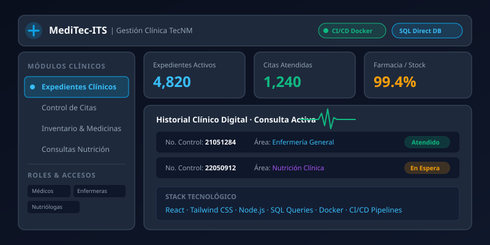

Sobre el Proyecto
MediTec-ITS surge ante la necesidad de modernizar y sustituir los procesos manuales en papel dentro del departamento de enfermería y servicios médicos escolares. La plataforma centraliza el ciclo de atención de estudiantes y personal docente, permitiendo un registro fidedigno, seguro e inmediato desde que el paciente ingresa a consulta hasta la entrega de medicamentos y seguimiento nutricional.
Diseñado bajo estándares de alta disponibilidad y privacidad, el sistema garantiza que la información clínica permanezca protegida, permitiendo a los profesionales de la salud acceder al historial médico al instante desde cualquier terminal autorizada dentro del campus.
Funcionalidades Principales
El sistema abarca módulos clínicos y operativos interconectados en tiempo real:
📁 Expediente Clínico Digital
Historial unificado de consultas, antecedentes patológicos, signos vitales, alergias y notas de evolución médica con trazabilidad completa.
📅 Kiosco y Citas de Autoservicio
Módulo de registro rápido autenticado mediante Número de Control de alumno o Número de Seguridad Social (NSS) para asignación de turnos.
💊 Farmacia e Inventario
Control automatizado de existencias de medicamentos, alertas por lotes próximos a vencer y descuento directo tras prescripción médica.
🥗 Consultas de Nutrición
Módulo especializado para nutriólogas con cálculo de métricas antropométricas (IMC, % grasa), metas clínicas y planes de dieta.
🔐 Control de Accesos por Roles
Niveles de seguridad independientes para médicos, enfermeras y nutriólogas, asegurando confidencialidad entre departamentos.
📊 Reportes & Métricas Institucionales
Generación de reportes de incidencia epidemiológica, bitácoras de atención mensual y estadísticas para la dirección del plantel.
Especificaciones Técnicas
Para garantizar máxima velocidad y control absoluto de los datos médicos sin cuellos de botella, la solución fue concebida con una arquitectura robusta:
-
Consultas SQL directas y nativas: En lugar de capas ORM pesadas que añaden latencia innecesaria, se implementaron consultas SQL optimizadas a medida, garantizando transacciones atómicas e integridad referencial estricta.
-
Arquitectura Contenerizada con Docker: Tanto el frontend, backend de Node.js y la base de datos se ejecutan en contenedores independientes orquestados, facilitando portabilidad y aislamiento en servidores locales.
-
Pipelines de CI/CD: Despliegue automatizado con integración continua que valida pruebas automáticas antes de publicar actualizaciones al servidor de producción.
-
Frontend Reactivo en React + Tailwind CSS: Interfaz moderna, rápida y responsiva, optimizada para pantallas táctiles en kioscos y estaciones de escritorio clínicas.
